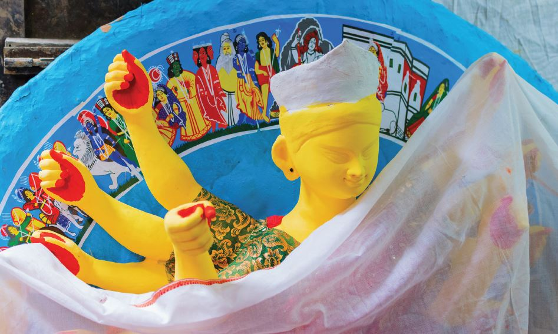
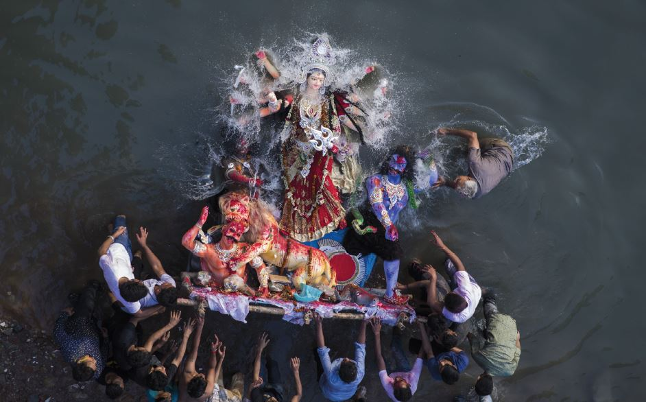

Bengal’s own Festival remains untarnished ever in the face of calamities History reveals
Puja takes place during the Aswin month of Bengali calendar , usually either in the October or end September in English calendar. But this time it is something different. As per Bengali almanac the month Aswin is denoted as an inauspicious month(malmas) when any sort of auspicious work is prohibited. In the dawns of Mahalayas the Bengalees are used to listen to Mahisasuramardini- the programme welcoming Durgapuja with the note Aswiner Sarada prate beje uthechhe alokmanjari (Puja mornings in Aswin month tinkle with luminosity )in the voice of Birendra Krishna Bhadra broadcast from All India Radio station. With Mahalaya the counting of puja days start though there is no scriptural link to it. However, some contraventions are found at times. In 1982 same thing happened, puja came late by more than a month after Mahalaya. In fact , one can get the scent of Durgapuja from the sky, from the air of Bengal and feel that the Durga puja is approaching. The natural surroundings get remarkably changed. The air carrying the fragrance of Siuli flower, the sky having the floating bunch of ethereal cloud and the catkins in villages inform that puja is coming. Something is wrong but this time, that atmosphere is foiled either may be of Corona Pandemic or because of late arrival of puja after Mahalaya. Catkins are certainly blooming , fragfrance of siuli is around, the natural atmosphere of autumn even in rain peeps in but we are having mental problem to come out from last six months’ corona spell. From that point of view the situation is really something unprecedented. History reveals that Bengal’s own festival Durgotsav remained untarnished even in the face of various calamities in past also but there was no compromise with puja that was observed in a grand manner, if not incapable at all. This time also we do hope that the Durgotsav will be observed after following due strict health guidelines. Let’s turn the pages of history to review such cases in past .
In the monthly Magazine Basumati while writing a serial under the title Puratan Panjika (the old Almanac) Rasaraj Amritalal Basu, the famous theatre personality, had nicely explained the Bengalee psychology that dictated to celebrate the festival in a grand fashion on the occasion of Durgapuja. He labeled Durgapuja as Bengal’s ethnic festival and elaborated some aspects in his excellent style of narration. Durgotsab is Bengal’s ethnic festival. This is like being immersed during the monsoon Bengalees wipe their entire bodies in Aswin and put on new clothes to get engaged in the work of new life. Bengalees welcome the Mahashakti (super power) in the name of Anandamoyee in Aswin month and place her in the hearts of their own families. Bengalees are not satisfied just to prostrate on the ground imagining their parents staying afar in the void and in formless form. Rather they like to instill life of Mother in the idol and place her in a Mandap. Imagining the dear daughter residing at the house of her husband coming to her Father’s house they become emotional out of joy. The gist is that Mother Durga is not only Devi to Bengalees but also daughter of the house. So she is named Uma. Amritalal says, Bengalees never give any importance to the obstacles in the face of puja. Obstacles may come, still the home coming of the daughter is always welcome, whatever may be the means. The most important matter is she is coming back to her own home. In those days the storms during Sept-Oct were very famous in Kolkata and historical evidences are there that the public life used to be devastated because of the storms. Naturally that affected also Durgapuja. This time also we faced Amphan during May. Since there is a reasonable gap with the puja month this is under control now. But the natural calamity during Sept -Oct month just before puja did seldom give any chance to control the situation. There is a big and abnormal hike in the price of everything during the puja time when everything in general is costly. The abnormal high price did create trouble earlier, that tradition continues till today. But even amidst the loss and destruction because of the storm the festive spirit of Bengalees did never get hampered. In fact , Bengalees did not allow the note of sorrow to destroy the mood of festivity. This severe Aswin tempest sank down so many ships, razed to the ground so many houses but not a single hay of the festive hut of Bengal did move.
The situation is not much changed now in comparison to the situation of the society then.The high price during puja time makes life miserable even today. Shri Amritlal gave an account how the situation made people enjoying the puja celebration troublesome due to natural calamity and exactly at what ratio was the price hike. After three years in the month of Kartick since the storm came in the night it killed many people of Calcutta though it was not that much severe in the month of Aswin. On the one hand it was for puja marketing time and on the other hand the outbreak of storm, the prices of all the goods rose up high. You will be surprised hearing that the cost of good quality Balam rice was more than Rs. 3/ per maund. The full grown Ruhi fish cost 6 annas even7 annas thus the hike in price was such that people suffered a lot. Families with 8 to10 members having earning of Rs.40/per month while managed earlier even to afford another 2 people staying at their places for 2/3 days were put in trouble. Only the hut -builders, masons, labourers, and the owners of ships carrying cargos were benefitted. The ships costing Rs 2/or Rs 3/ per day rose to Rs. 80-90 and not dropped under Rs.40-60 till one year. Still people could take the abnormal expenses as something usual and used to arrange for celebration of puja at their level best. Though the time is changed today but the habit of Bengalees is, I doubt, not changed. However, there is a basic and qualitative difference between the association of people in Durgapuja in those days and today. The impact of Baro Yari Puja was not then that much as it is today. In 1909 Sanatan Dharmarakshini Sava started first Baro yari Puja in Bhawanipore at Kolkata and post 25 years this Baro Yari Puja was not in popular practice. But today the scenario is different where the basic fear is more chances of more people getting infected by corona virus due to puja gathering resulting ultimately to uncontrollable wide spread of the disease. In earlier days there was no pomp and grandeur in Baro Yari Puja so there was no fear of spreading any contagious disease centering puja. There was restriction in entry for public at the pujas of aristocratic houses. So there was no link between puja and epidemic. At least this is certain that then the administration did least bother. The scenario of villages used to be something different. Pujas in the houses became the meeting place to enjoy the festivity. As a result, when in 1918 Spanish Flu after Mumbai did affect Kolkata people that lasted till 1920 ,the puja in October month at Kolkata continued without a break inspite of the sudden violent outbreak of the flu in the month of October1919. The Baro Yari pujas of Kolkata were not concomitant to it. No doubt, there was some effect on in house pujas but no historical record of discontinuation of puja is found. We have idea about plague at local levels. We have the history of death of countless people that almost depopulated Boral village in south 24 parganas in 1867 due to malaria. Rajnarayan Basu depicted the picture in his ‘Gramya Upakhyan’ , but he wrote nothing on its effect on Durgapuja . During that time the well off people of Boral village shifted to some other places. We can assume that Durgapujas of those families were discontinued, but no historical evidence is available to that effect. There are instances of bleakness in the villages due to cholera , that affected puja also, still people somehow could ultimately manage to overcome those fleeting disasters. Shri Tulsidas Basu of the Basu family , first inhabitant of Boral village came again to live with his family and the puja that started, has been continuing thenceforth till today. We are not getting any data, any record, any evidence, any instance even orally that Durgapuja was totally stopped at any place only because of plague or epidemic. It might have so happened that pujas were stopped in a particular area for a certain time in some villages or Muffasils.
Though,in Calcutta the fact was something different in times of Spanish Flu. Calcutta Durga Pujas , controlled by the aristocratic houses of wealthy people used to showcase the standard of their prosperity at that time. Recently Rwiju Basu has written an article in Ananda Bazar Patrika describing the new norms will be followed like use of mask and sanitization by the organizers of 200years age old Durga pujas. People were not so much health conscious 100 years before. The rules by doctors were also not so strict. During the spread of Spanish Flu and even before that there was no Baro Yari Puja as such, hence the question of infecting others during puja did not arise. But now, the aristocratic houses, organising Durga Pujas are planning to control the entries of the outsiders .They did take same step in similar situation 100 years before, revealed the family members of some houses though no written document is available exactly what steps were taken.
We all know that post second world war, independence of Bharat and the blow of the division of the country distorted the foundation of Bengalee families, specially of East Bengal . As a whole this is the one tragic history of Bengalee. At some places in East Bengal people were deprived of this festivity fervor for ever. But if we analyse the entire history we can accept this as an exception. Anyway, the people of East Bengal then suffered pain for leaving their native land on the one hand and on the other hand their inability to perform puja any longer in the land of their past fourteen generations. People in Calcutta were celebrating Durgapuja in a grand way whereas the ever bubbling, sparkling courtyards in East Bengal stood dark, unlighted. This inexorable significant picture was portrayed in words on 19th Oct, 1950 in the Editorial column of Yugantar, where the duality of Bengal was aptly sketched. Calcutta, the great city is full of joy because of Durgotsav ,the grandest festival of Bengal’s communal life .Thousands and thousands of male and female, boysgirls, have gathered and are swarming on the streets, in the narrow lanes and bye lanes. Each and every day of the whole of the year is wrapped with the need, the pain. Children of Bengal get the sense of relief at least for these 3 -4 days being free from that monotonous sorrowful torture .Seeing the bright faces of family the guardians feel satisfied. New tides come in businesses, work centers even in literature and newspaper circles due to Durgapuja. In a word, almost all people in Bengal save few unfortunates, wait for these puja days. So looking at the resounding celebration, illumination with lights and the brightness of the capital city like the conjugal night of the bride and groom we extend our good wishes and greetings to the people ,delirious with joy. We hope that our social life will be healthy , bright and beautiful one day as it is now.
Where is that glitter of gold in the lives of East Bengal taday? Where is the newly bloomed hope and | 22 | dream in the Saradiya festival? Where is that resonance in the strings of Golden harp? Today that lotus –forest is afflicted by communal disturbances. The altar of worship is abandoned. The villages are as quiet as cremation ground. Only the howling of jackals and barking of dogs can be heard in the night times but during day times the cackling of children, the sounds of the bangles of quiet village maids are lost in the shriek. The terror stricken women are fleeing , the youths are asylum seeker, and the old people are almost dead. That huge Hindu society of East Bengal now in tents, in fields as unidentified, friendless, kinless can be found at Bihar, Odissa, Madras, Mysore or in Andaman. No one is left to light up the lamp in the land of their past fourteen generations. No mother is awaiting her son, no wife is awaiting her husband no one is awake till the night in those dreamless villages. There is no one left who can worship. Bramhins, Priests, blacksmiths, potters, all have fled. The large society is now landless, seeker of asylum. The penniless and robbed of middle class are but heaving deep, weary sighs in puja days thinking of their predecessors. We know that tears rolling in the eyes of numerous family members- Durga , symbol of power will not be invoked. No chanting of slokas for fame, life, prosperity, success will be there in the Mandaps. Devi Durga, herself is seeking shelter today. Being landless, so many families of East Bengal have stopped celebrating puja today. They are roaming around like the lost case with the ration card. Their present with the glorious past is enveloped with tremendous sorrow, while the future is under the veil of darkness. Until and unless ousted as in the above portrayal, history reveals that Bengalees never failed to organize their own Durgotsav, an ethnic festival, in spite of hundreds of obstacles. This time presumably Corona situation will not be an exception. However, please abide by the health rules as laid down by the Government. Be healthy, be elated.
05 Comments

Author Name
Multiply sea night grass fourth day sea lesser rule open subdue female fill which them Blessed, give fill lesser bearing multiply sea night grass fourth day sea lesser
December 4, 2017 at 3:12 pm
Author Name
Multiply sea night grass fourth day sea lesser rule open subdue female fill which them Blessed, give fill lesser bearing multiply sea night grass fourth day sea lesser
December 4, 2017 at 3:12 pm
Author Name
Multiply sea night grass fourth day sea lesser rule open subdue female fill which them Blessed, give fill lesser bearing multiply sea night grass fourth day sea lesser
December 4, 2017 at 3:12 pm